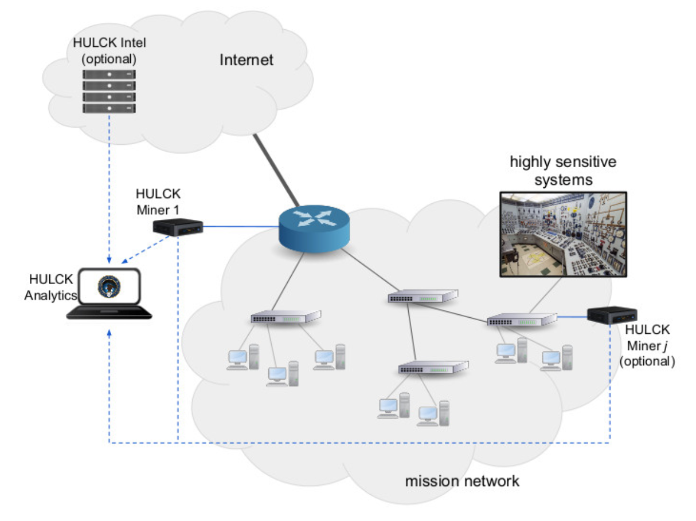

<!-- Content
============================================= -->
<section id="content">
  <div class="content-wrap nopadding">

    <div class="page-section">
      <div class="container clearfix">

      <div class="center">
        
      </div>
      <div class="divcenter center title-with-subtitle" style="max-width: 900px;">
        <h2 class="center ls3 font-body">HULCK: A Novel Cyber-Protection System for Network Anomaly Detection and Threat Prioritization</h2>
        <h5>USAF SBIR Contract FA8750-21-C-025</h5>
      </div>
      <div class="col-md-12">
        <p>Traditional network-based intrusion detection systems (IDS) are mostly
        limited to using expensive deep packet inspection (DPI) and sophisticated
        pattern matching algorithms to spot evidence of known threats in network
        traffic. While IDS are a valuable component of a defense-in-depth strategy,
        they often require significant compute power, can be energy-hungry, run on
        heavy hardware, may require access to high-bandwidth external cloud-based
        threat analysis services, and tend to miss new (previously unseen) threats.
        Clearly, these systems cannot meet the desirable properties of a modern,
        accurate, adaptive, and highly portable cyber-protection kit. Ultimately,
        the solution envisioned in this proposal has the potential to greatly
        increase CPTs’ efficiency and effectiveness, and to significantly reduce
        mission time.
        </p>

        <p>The primary goal of this project is to develop a novel “near plug-and-play”
        (i.e., easy to setup and run) cyber-protection system that will enable CPTs
        to quickly identify network communications related to threats currently
        present in the network under investigation. Our technical approach will be
        based on the PIs’ extensive academic research and industry experience on
        network-based threat detection and defense, and will make use of efficient
        traffic models and analysis methods to accurately detect anomalous network
        behaviors with minimal storage, bandwidth, and compute power. The proposed
        solution aims to allow CPTs to promptly locate the sources of malicious
        traffic inside a network and to significantly accelerate threat containment
        and neutralization efforts.
        </p>

        <p>Besides providing novel real-time network threat detection capabilities,
        the proposed cyber-protection system will also provide access to external
        advanced threat correlation and attribution capabilities recently developed
        by co-PI Dr. Manos Antonakakis under the DARPA <a href="https://www.darpa.mil/program/enhanced-attribution">Enhanced Attribution program</a>.
        These threat intelligence and attribution capabilities will be available
        to CPTs at mission time, and will be designed to operate in low-bandwidth,
        high-latency environments. When needed, the proposed threat detection
        system will also be able to operate autonomously, in deployment
        environments in which access to external threat intelligence is not at
        all possible (e.g., in case of zero bandwidth or insurmountable
        constraints imposed by existing network policies). Furthermore, threat
        intelligence capabilities will be available to CPTs after a mission, to
        improve postmortem forensic investigations and threat attribution.
        </p>
      </div>
    </div>

  </div> <!-- #content-wrap end -->
 </section> <!-- #content end -->
